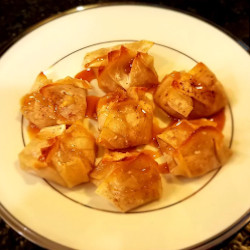

Apple Pie Bites

These golden crusted, bite size Apple tarts, drizzled with melted caramel are delicious.
Ingredients:
- 2 apples, peeled and diced
- 2 tablespoons white sugar
- 11/2 tablespoons ground cinnamon, divided, or more to taste
- 1 tablespoon melted butter
- 1 egg white
- 20 wonton wrappers
Directions:
- Preheat the oven to 350 degrees F (175 degrees C).
- Combine apples, sugar, 1 tablespoon cinnamon, and butter in a bowl.
- Wet all edges of wonton wrappers with water. Place 1 tablespoon of apple mixture in center of each wonton. Fold all 4 corners of wonton to the middle. Squeeze together.
- Brush egg white onto the wonton wrappers and sprinkle with remaining cinnamon. Place wontons on a baking sheet.
- Bake in the preheated oven until golden brown, about 15 minutes.
- Optionally, drizzle with melted caramel or glaze icing while still slightly warm.